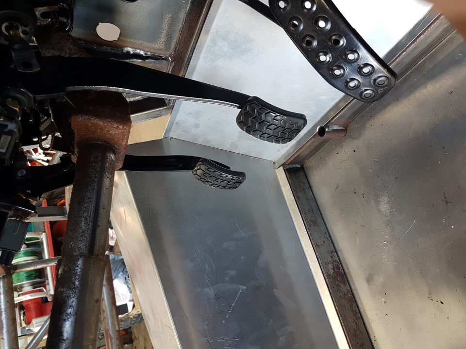
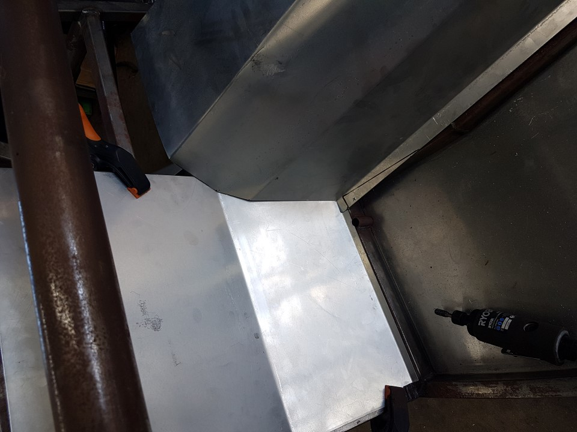
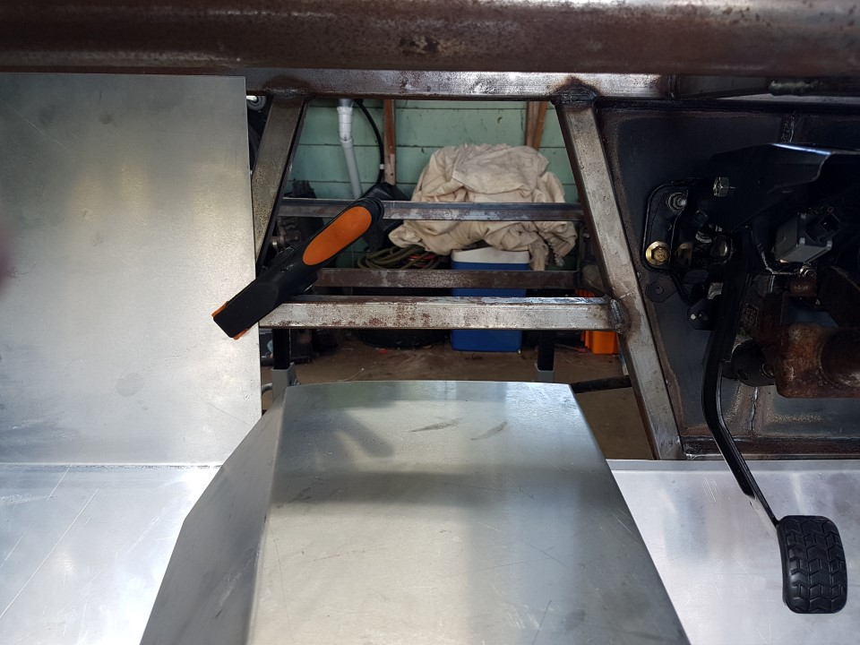
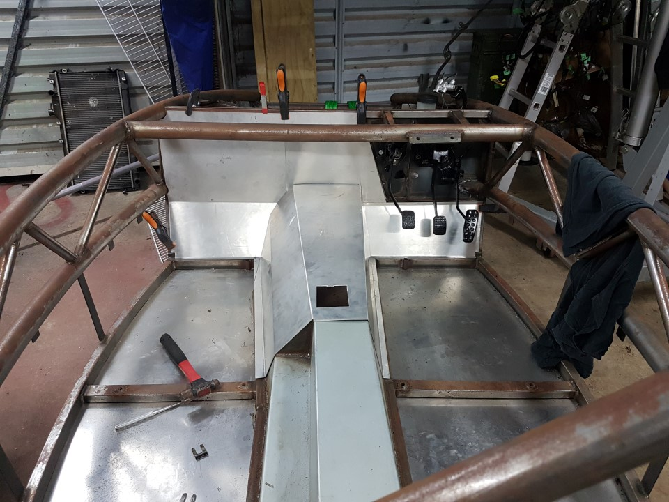
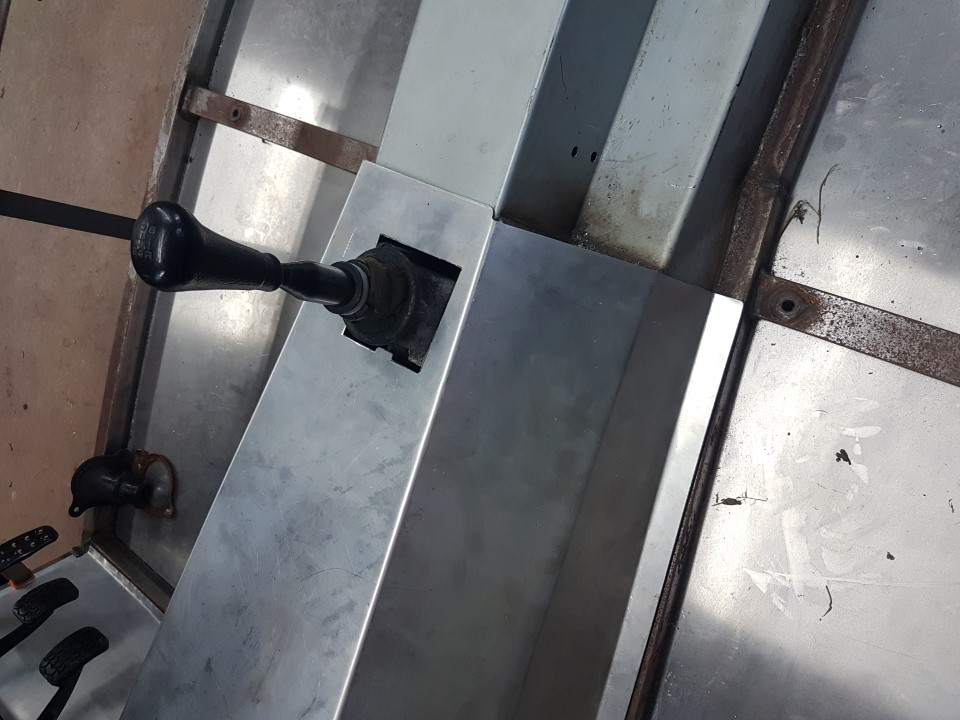

Firewall panels
There’s no simple instructions for this section, use your creativity and take it slow, mark twice cut once.
- Start with the easy one, drivers foot panel. This needs the outside edge cutting on a angle, aim to have the panel half way across the box section. Note you will to have a cutout for the box section at the bottom, and maybe a notch for the weld. Readjust the angle of the top and bottom tab to fit nicely
- Next the passenger foot panel. Aim for the same again with the panel half over the box section, you will have to cut out for the top chassis bar, a notch in the middle and a notch at the bottom.
- Remove foot panels.
- Transmission tunnel, cut the rear of the tunnel so that you have a good fit around the rear part of the tunnel. We only cut on the passenger side, allowing just enough to eliminate gaps, sitting flush on the triangle filler plate and leaving a tab on the top & drivers side for a couple of rivets if needed.
- The tricky part, the front of the transmission tunnel cover needs to fit up against the foot panels. using a straight edge and the foot panels to help, mark on the tunnel where you need to cut for a snug fit, check again, and cut.
- Put the foot panels in place & clamp - things may change as you go on so no holes or rivets yet
- Re fit the tunnel and make adjustments as needed until you are happy.
- On the inside of the tunnel, mark the foot panels with dots where the transmission tunnel meets, and any corners.
- Remove panels.
- Draw a line 3cm parallel to the dotted one, and at any corners to this line, cut these line and fold the dotted to 90degrees.
- Refit to chassis, adjust as required, when you are happy fix with clamps.
- Using the large sheet of aluminium supplied or a floor plate cut off fill in the gap above the transmission tunnel, use a 85degree fold to slip under the front of the transmission tunnel.
- Drill rivet holes at 100mm centres for all plates.
- Remove transmission tunnel.




